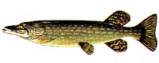

Northern Pike (Esox lucius) | |||
 Description The members of the pike family inhabit shallow rivers, streams and stillwaters with clear water but with plenty of vegetation in which to lurk to wait for their prey. They are aggressive, solitary hunters, large in size and well known to anglers for the fierce fight they put up when hooked. The northern pike is one of the few freshwater species native to both North America and Eurasia. Also referred to as the jack or jackfish, the body of the pike is long and lean with a large head which has a flattened dorsal surface. Its mouth is large, with many sharp teeth on its jaws and the roof of its mouth. The bottom jaw often extends slightly beyond the snout. The pike is characterized by its markings; a series of pale bars and spots on its olive green to lighter green sides. Their markings provide excellent camouflage as they hide among weeds, waiting for prey. The underbelly is pale yellow to white. The average pike weighs 1.4 to 2.3 kg, although some grow over 4.54 to 9.1 kg. The maximum weight is thought to be about 34 kg. Females grow quicker than males and live longer achieving a greater maximum size than males.
| |||

Diet The principal food of the pike family is fish, including smaller fish of their own kind. The fish is a very aggressive feeder. They are known to eat frogs, snakes, crayfish, rodents and ducklings. The pike will swallow their prey head first; some prey being almost as large as the predator itself.
Reproduction Spawning occurs in the spring as soon as the ice melts. Females deposit their adhesive eggs in shallows of lakes or streams. As many as two or three males may fertilize the eggs. The eggs are abandoned and incubation may last from twelve days to three weeks, depending on the temperature of the water. The female may deposit over 100 000 eggs, although the average is 35 000. The young are 6 to 8 mm in length after hatching. They stay attached to vegetation for six to ten days feeding off the yolk sac. They then migrate to the lake or main river current and feed on zooplankton and immature aquatic insects. Once reaching a size of about 50 mm, fish enters their diet.
Habitat A good eating fish, if taken from cold water, pike can be found in almost every lake or stream in Saskatchewan.
| |||